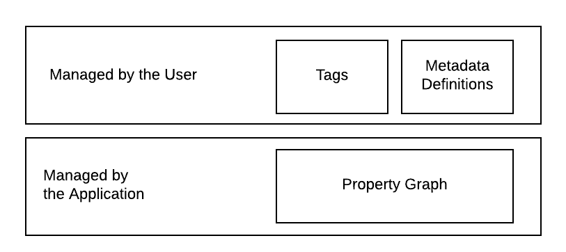

The Data Model Overview
Introduction
Insights leverages a graph database for storing user data. To accomplish this, a metadata model is leveraged that enables the user to define how data is stored. This section attempts to provide insight into the metadata model.
Neo4J Dependency
Currently, the embedded database is Neo4J. This database is a graph database rather than a relational database. A graph database was selected primarily for two reasons.
- The application is designed to enable data collection about the relationship between entities.
- The definition of data entities (i.e. tables) is delayed until runtime since the user is the one specifying the data definitions. While this could be accomplished by layering a meta-model on top of a relational or NoSQL database, a property graph seemed to be a more natural fit.
Data Layers
The data model is conceptually partitioned into two layers based on responsibility.
The application manages the lower layer through direct manipulation of a property graph.
The user manages the upper layer which is composed of tagging and meta data definitions.

Property Graph
The primary responsibility of the application is to enable users to store their data in a safe, secure and reliable way. This is done via the Neo4J property graph. The graph is composed of vertices and edges. A vertex contains data. In the context of the application, a graph vertex is referred to as a node. Edges related the vertices to one another. Nodes and edges are the lowest level building blocks of the data model. They are not used directly by the user, rather higher order domain objects are used.
Meta Model
A key feature of the system is that it is not opinionated in what data may be stored. This is enabled through the utilization of a meta model. The meta model allows users to define what graph elements they want to work with. The point is to not make an enforceable schema on top of Neo4J's schema but rather to allow the user to define re-usable definitions for Nodes that can be dynamically provisioned and then populated by the user.
Tags
Working with graphs directly can be laborious. To assist with this, the data model provides the ability to define tags to graph vertices. Tags can be used to search for items or drive the user interface.